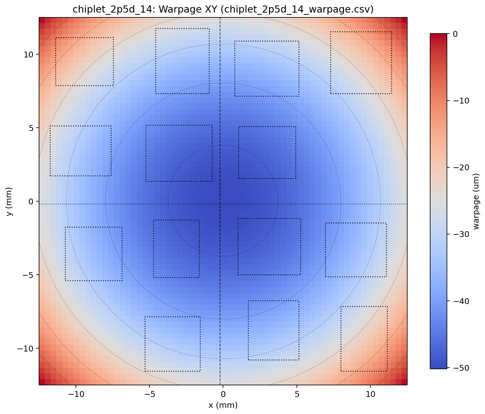
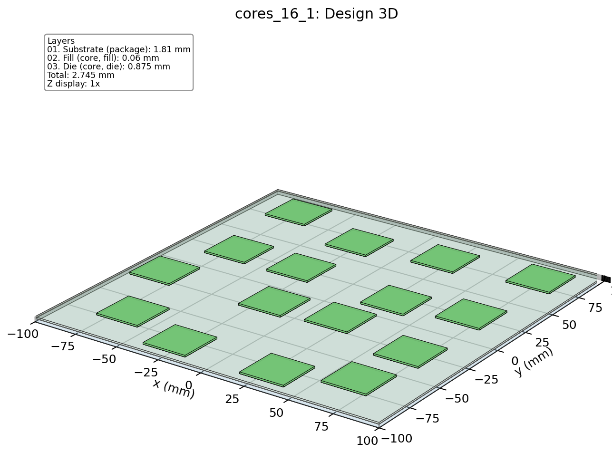
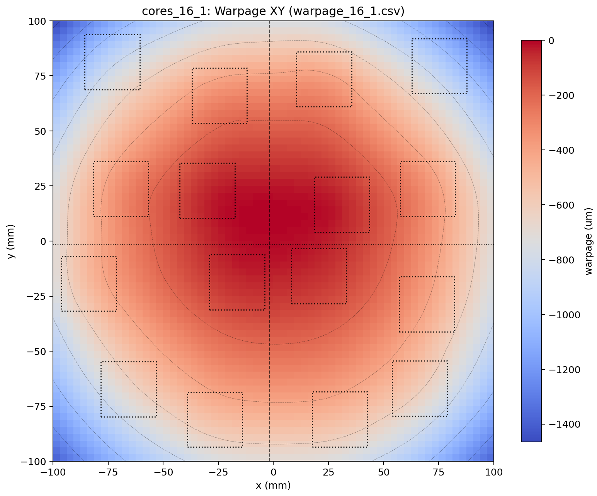
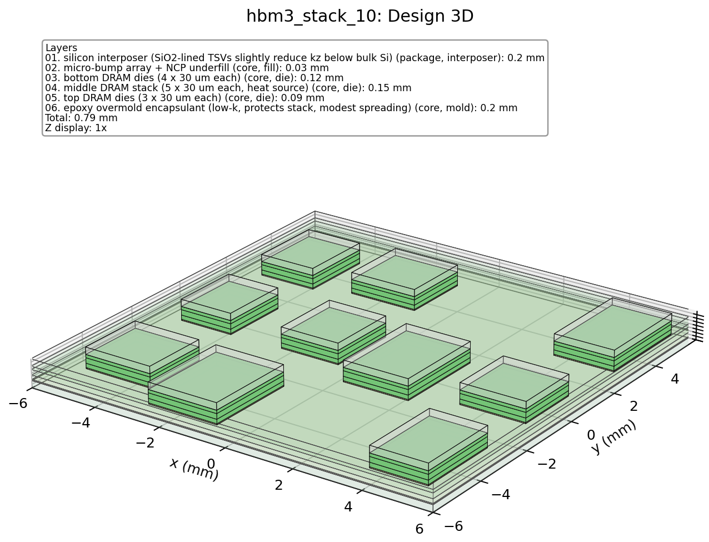
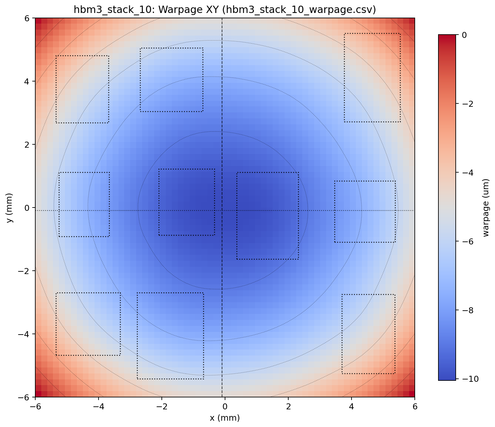
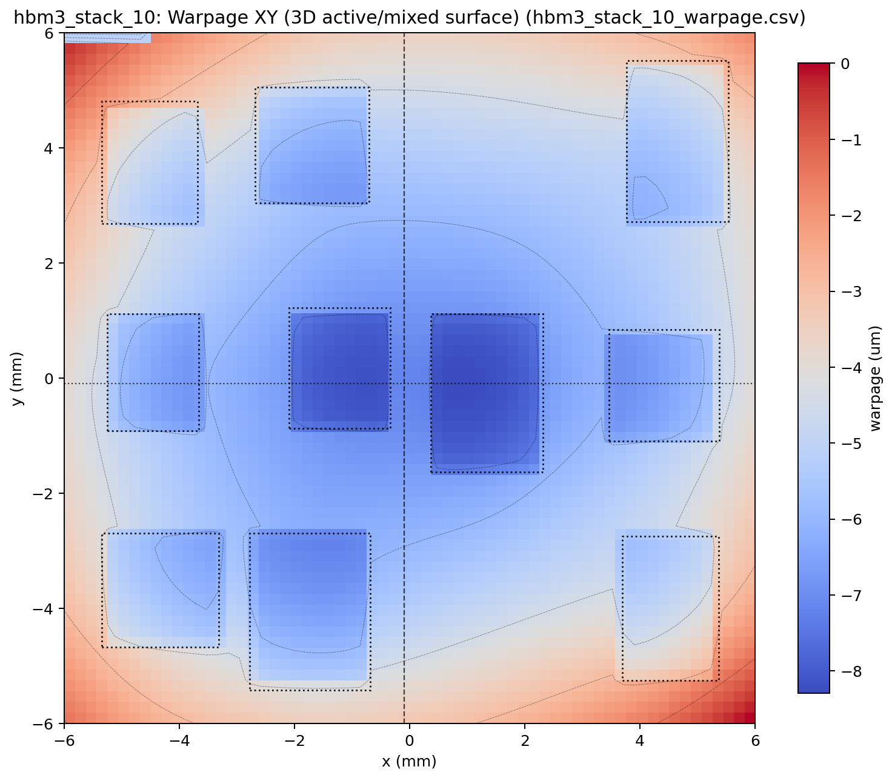
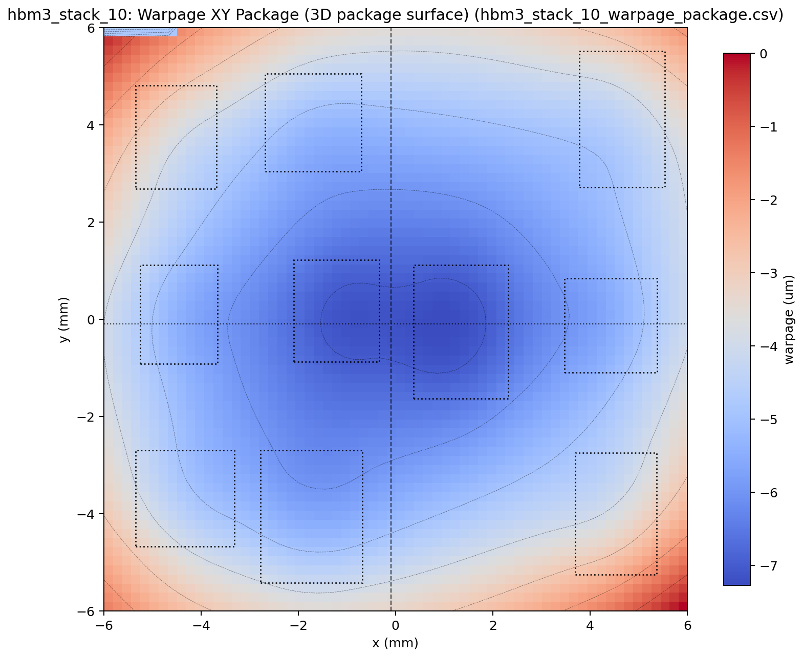

WarpStack predicts thermal warpage for advanced 2.5D and 3D chiplet packages with a hybrid engine: fast 2D numerical analysis to screen a whole design space, detailed 3D numerical analysis for accurate sign-off, and WarpStack-GNN — an AI-accelerated method that returns numerical-grade warpage maps in milliseconds. Numerical when you need ground truth, AI when you need it now.

Stacking silicon, interposers, and memory bonds materials with very different expansion rates. As the assembly heats and cools, those mismatches make the whole package bow and twist — and that warpage is a first-order reliability risk in modern 2.5D and 3D integration.
Every material in the stack expands by a different amount. Cycle the package from assembly to operating temperature and those mismatches build internal stress that warps the whole structure.
Too much bow leads to cracked dies, delaminated layers, and open solder joints — and it makes assembly yield fall. Catching it early is far cheaper than finding it on the line.
Floorplanning, stack-up choices, and material selection all change how a package warps. Designers need a warpage answer on every iteration — not once, at the very end.
WarpStack is a hybrid engine: a fast 2D numerical method for screening, a detailed 3D numerical method for accurate sign-off, and WarpStack-GNN — an AI-accelerated method for near-instant, numerical-grade warpage. All three run from the same simple design description, so you move between speed, accuracy, and real-time inference without changing your inputs.
The fast 2D numerical returns a full warpage map in about a third of a second — the same speed whether the design has 3 layers or 11. Sweep hundreds of floorplans and stack-ups without waiting.
The detailed 3D numerical resolves the package through its full thickness, layer by layer — the fidelity you want for complex, interleaved multi-layer stacks where a fast estimate isn't enough.
An AI-accelerated method, trained on numerical ground truth, predicts full warpage maps in ~1.5 ms at ~1% error — fast enough to put warpage inside a live optimization loop, and it generalizes to designs it has never seen.
Handles arbitrary layer stacks — substrates, interposers, bumps, dies, spreaders, lids — with per-layer materials and per-die placement. Validated on designs from 3 to 11 layers and 10 to 18 dies.
Every run produces warpage heatmaps, cross-sections, and a 3D stack view, plus the peak-to-peak bow in microns — so the shape and the number are both easy to read.
A built-in compare mode runs both solvers and shows exactly where they agree and where they differ — so you know which designs the fast 2D can screen and which ones truly need 3D.
A command-line interface and structured JSON in, CSV/JSON out make WarpStack easy to script — run one design or a whole batch, and feed the results straight into your own design flow.
WarpStack is designed to drop straight into agentic EDA and system-design workflows. A first-class CLI and structured data interface let autonomous design agents call fast 2D numerical, detailed 3D numerical, or WarpStack-GNN AI inference, read back machine-readable warpage maps and peak-to-peak margins, and feed them into floorplanning, stack-up, and material-selection loops — for warpage-aware optimization and warpage reliability sign-off of chiplets and advanced packages in system design. With millisecond AI inference, warpage finally runs at the speed of the loop itself.
Warpage analysis becomes a callable step inside your agentic flow — not a hand-run GUI task.
You describe the package once — its layers, materials, and where each die sits. WarpStack builds a mechanical model of the stack, applies the thermal load, and solves for how the surface deflects. Then pick the method that fits the moment: fast 2D numerical, detailed 3D numerical, or WarpStack-GNN AI inference. The inputs are identical.
A single structured file lists the layer stack, each layer's material, and the placement of every die or module — the whole design in one place.
WarpStack takes the package from its stress-free assembly temperature down to operating temperature, so the expansion mismatches between layers turn into real bending.
A numerical solver computes how the surface deflects — a fast 2D method for screening, a detailed 3D method for sign-off. Or skip the solve entirely and let WarpStack-GNN — an AI-accelerated method trained on that same numerical output — predict the warpage map in milliseconds.
Out come warpage heatmaps, cross-sections, and the peak-to-peak bow in microns — identical format from every method, ready to view, compare, or drop into your own scripts.
A fast numerical method that solves the bow on a plane — the lowest-cost estimate, ideal for sweeping many designs.
A detailed numerical method that resolves the package through its full thickness — the ground-truth fidelity for complex, interleaved stacks.
An AI-accelerated method, trained on numerical ground truth, that predicts the full warpage map directly — no solve required.
The three methods are built to work together. Screen the whole space with the fast 2D method, sign off the critical designs with the detailed 3D method, and — once WarpStack-GNN is trained on that numerical output — call the AI for near-instant maps whenever you need warpage inside a live loop. Because the AI learns from the same numerical engine that validates it, you get numerical-grade answers at AI speed. Same floorplan, same materials — you simply choose truth, detail, or speed.
Warpage is reported as peak-to-peak deflection in microns with the full surface map — in the same format from the numerical methods and from the AI.
First, the numerical engine on a batch of nine 2.5D and 3D benchmark designs — fast 2D numerical and detailed 3D numerical, from a 3-layer module to an 11-layer chiplet. Then WarpStack-GNN, benchmarked against numerical ground truth: numerical-grade warpage in milliseconds, even on designs it has never seen.
| Design | Layers | Dies | 2D time |
|---|---|---|---|
| 3-layer module | 3 | 12 | 0.342 s |
| Planar 16-die array | 3 | 16 | 0.347 s |
| Arbitrary-layer module | 5 | 12 | 0.345 s |
| GaAs RF PA array | 5 | 15 | 0.347 s |
| HBM3 memory stack | 6 | 10 | 0.346 s |
| 5 nm CPU | 7 | 18 | 0.347 s |
| 2.5D chiplet | 9 | 14 | 0.347 s |
| 11-layer 3D chiplet | 11 | 16 | 0.356 s |


The fast 2D method returns a single, smooth package bow. The 3D method resolves the stack layer by layer, so it reports warpage per surface — the die-level active surface and the continuous package surface — capturing local, die-specific deflection that the flat 2D map averages away.




| Design | 2D | 3D | Agreement |
|---|---|---|---|
| Arbitrary-layer module 5L | 251 µm | 269 µm | 93% |
| 2.5D chiplet 9L | 50 µm | 44 µm | 88% |
| Planar 16-die array 3L | 1465 µm | 1256 µm | 86% |
| HBM3 memory stack 6L | 10.1 µm | 8.3 µm | 83% |
| 16-die array, variant 3L | 1696 µm | 1370 µm | 81% |
| Method | Runtime | vs 3D numerical | Error vs numerical |
|---|---|---|---|
| 3D numerical reference | 174.5 s | 1× | — |
| 2D numerical screening | ~0.35 s | ~500× | est. |
| WarpStack-GNN AI | 1.46 ms | 119,766× | 1.26% |
| Unseen dataset | Norm. RMSE | Norm. MAE |
|---|---|---|
| Case ① | 2.32% | 1.78% |
| Case ② | 2.62% | 1.86% |
| Case ③ | 3.01% | 2.31% |
| Case ④ | 3.69% | 2.68% |
WarpStack is in active development. Request a demo or a walkthrough on your own 2.5D/3D chiplet designs, and we'll get you set up.